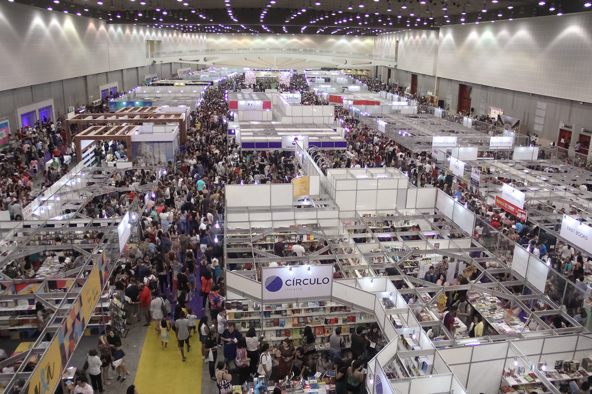

O que esperar da primeira Bienal depois de dois anos de pandemia?
Em sua 14ª edição, a Bienal Internacional do Livro do Ceará, suspensa em 2021 por ocasião das medidas sanitárias estabelecidas para proteção da população, abre o ano de 2022...
- 26 de Outubro de 2022